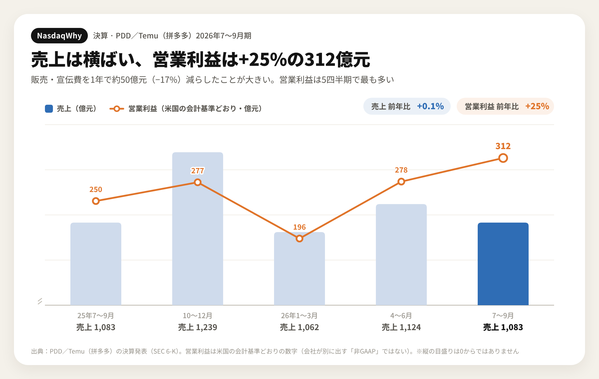
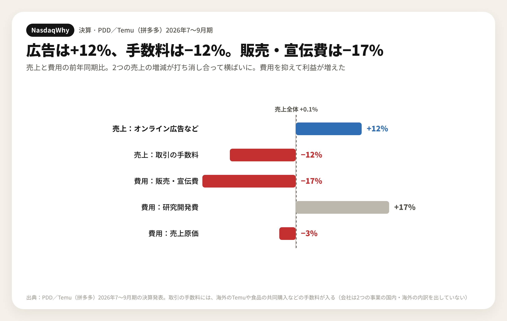
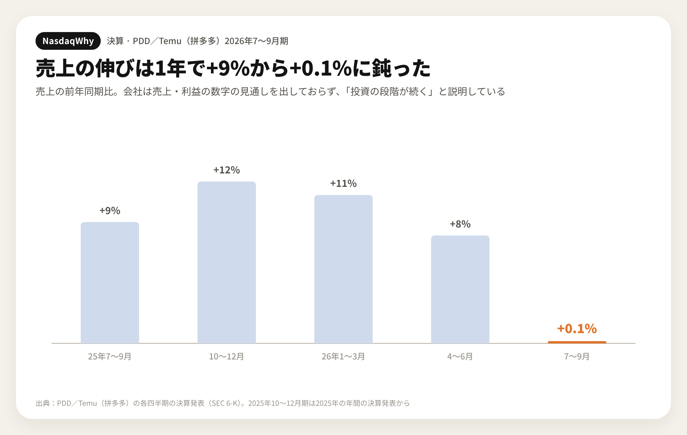
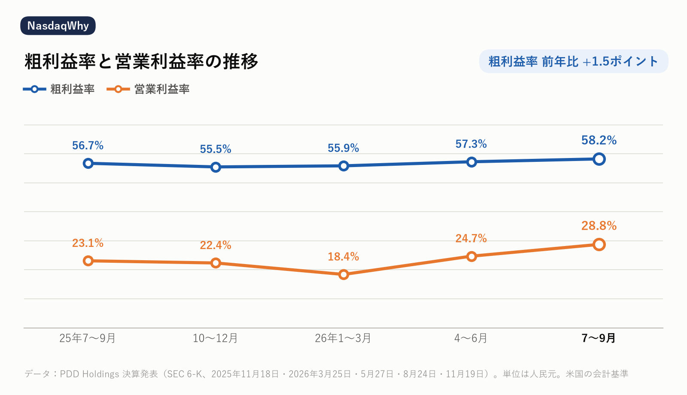
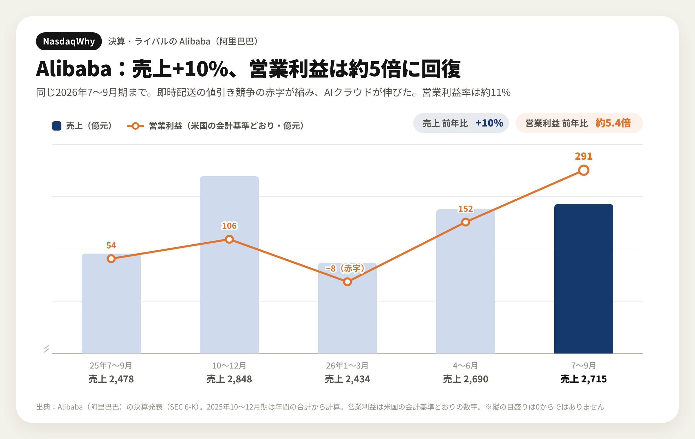
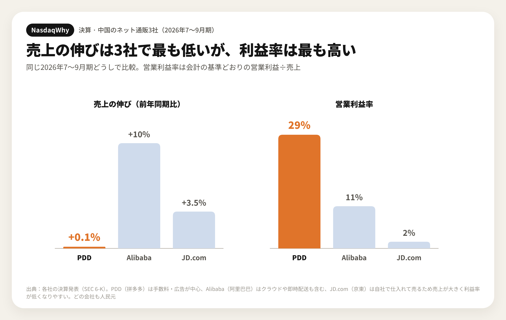

PDD｜2026年7〜9月期の決算｜決算発表 2026年11月19日（米国の取引開始前）
PDD／Temu（拼多多）の決算：売上は横ばいなのに、なぜ営業利益は25%増えた？
中国の格安ネット通販のPDD／Temu（拼多多）の7〜9月期は、売上が前年同期比+0.1%の1,083億元とほぼ横ばいだった一方、営業利益（米国の会計基準どおり）は+25%の312億元に増えた。国内の通販アプリPinduoduo（拼多多）は、中国の総合ネット通販の取扱高でAlibaba（阿里巴巴）のTmall（天猫）に次ぐ2位（2024年、Statista 調べ）。海外では格安通販のTemuを運営する。売上は市場の予想（約1,162億元）を約7%下回ったが、利益は予想を上回った。

売上は1,060億〜1,240億元の間で上下している（10〜12月期は中国の年末の大型セールで大きくなる）。営業利益（米国の会計基準どおり）は、2026年1〜3月期に196億元まで減ったあと、4〜6月期は278億元、7〜9月期は312億元と2四半期続けて増え、この5四半期で最も多くなった。
主な数字（2026年7〜9月期）
| 今回 | 前年同期 | 前年比 | |
|---|---|---|---|
| 売上高 | 1,083億元 | 1,083億元 | +0.1% |
| 営業利益 | 312億元 | 250億元 | +24.5% |
| 営業利益率 | 28.8% | 23.1% | |
| 純利益 | 295億元 | 293億元 | +0.7% |
7〜9月期の売上と主な費用
| 項目 | 金額 | 前年同期比 |
|---|---|---|
| 売上：広告など | 598億元 | +12.0% |
| 売上：手数料 | 485億元 | -12.0% |
| 販売・宣伝費 | 253億元 | -17.0% |
| 研究開発費 | 51億元 | +17.0% |
中身を見ると：広告は増え、手数料は減った
売上の2つの柱が逆に動き、合計はほぼ横ばいになった。出店者からの広告などは+12%、取引の手数料は−12%。
費用では、販売・宣伝費が−17%と大きく減った。研究開発費は+17%と増やしている。売上が増えなくても営業利益が増えたのは、この費用の減少が大きい。

会社の見通し
| 数字の見通し | 出していない |
|---|---|
| 投資 | 続ける段階 |
| 費用の割合 | 傾向と見ないで |
- 会社は、売上や利益の数字の見通しを出していない。
- 劉軍（Liu Jun）氏（財務の責任者）は「戦略的な投資の段階が続いている」と説明。出店者の支援や物流などへの投資を続ける考え。
- 販売・宣伝費などの費用の割合は、投資の進み具合で四半期ごとに上下するので「傾向と受け取らないでほしい」と話した（説明会の要約）。
売上の伸びの推移
売上の伸び（前年同期比）は、2025年10〜12月期の+12%から、+11%、+8%と少しずつ鈍り、7〜9月期は+0.1%になった。
会社は数字の見通しを出していない。劉軍氏は「戦略的な投資の段階が続いている」と話しており、次の四半期も出店者の支援や物流への投資が続く見込み。

もうけの力

中国のネット大手と比べると
期間：どの会社も2026年7〜9月。利益率は会計の基準どおりの営業利益率（米国基準・IFRS）。各社の決算発表から。
| 会社 | 売上高 | 前年比 | 利益率 |
|---|---|---|---|
| PDD | 1,083億元 | +0.1% | 29% |
| Alibaba | 2,715億元 | +10% | 11% |
| JD.com | 3,096億元 | +3.5% | 2% |
| Tencent | 2,073億元 | +8% | 29% |
| Baidu | 308億元 | −1% | 2% |
事業の中身が大きく違う。PDD（拼多多）は国内の通販アプリPinduoduo（拼多多）と海外のTemuで、出店者からの広告・手数料が売上の中心（自社で仕入れて売らないので利益率が高くなりやすい）。Alibaba（阿里巴巴）はネット通販・即時配送・クラウド、JD.com（京東）は自社で仕入れて売る通販（売上は大きいが利益率は低くなりやすい）、Tencent（騰訊）はSNS・ゲーム・広告、Baidu（百度）は検索広告とAIクラウド。どの会社も人民元。
ライバルのAlibaba（阿里巴巴）：同じ7〜9月期までの流れ
Alibabaは7〜9月期の売上が2,715億元（+10%）、営業利益（米国の会計基準どおり）は291億元で約5.4倍に増えた。即時配送（クイックコマース）の値引き競争の赤字が縮み、AIクラウドが伸びた。
ただし、Alibabaの中国のネット通販だけを見ると売上は−5%（985億元）。国内のネット通販は、どの会社も伸ばしにくい状況が続いている。

ネット通販3社を同じ期間で比べると
同じ2026年7〜9月期で比べると、売上の伸びはAlibaba +10%、JD.com（京東）+3.5%、PDD +0.1%で、PDDが最も低い。
一方で営業利益率はPDDが約29%と最も高く、Alibabaの約11%、JD.comの約2%を大きく上回る。PDDは自社で商品を仕入れず、出店者からの広告・手数料で稼ぐため。事業の中身が違うので、差はおおまかな目安として見てほしい。

決算説明会で会社が話したこと
【出店者の支援】趙佳臻（Zhao Jiazhen）共同CEOは、1,000億元の支援策の範囲を、研究開発・生産・配送まで広げたと説明した。「投資は成果が出始めている」という。農村への送料無料の配送や、農産物の販売の支援も続ける。
【国内の競争】Citiのアナリストが「競争は落ち着いたか」と質問。趙佳臻共同CEOは、競争は激しいままで、どの大手も投資を続けていると答えた。
【海外（Temu）】陳磊（Chen Lei）共同CEOは「国際貿易のルールや各市場の要件は変わり続けている」と述べ、各地の倉庫や配送の仕組みを大きく強化していると話した。関税などの具体的な数字は説明しなかった。
【費用と利益】劉軍（Liu Jun）氏は、費用の割合は投資の進み具合で四半期ごとに上下するので、傾向と受け取らないでほしいと話した。
出典：決算説明会の書き起こし（The Motley Fool・Investing.com）。発言は英語からの要約。
NasdaqWhy の視点：データから読み取れる注目点
決算資料と各社の公式データを並べて読み取れることです。将来を予想するものではありません。
- 【なぜ売上が横ばいになったか】売上の2つの柱が逆に動いた。出店者からの広告などの収入（オンライン広告など）は+12%の598億元と伸びたが、取引の手数料は−12%の485億元に減った。取引の手数料には、海外のTemuや食品の共同購入などの手数料が入る。会社は手数料が減った理由をくわしく説明していない。陳磊（Chen Lei）共同CEOは「国際貿易のルールや各市場の要件は変わり続けている」と話し、海外では各地の倉庫や配送への投資を増やしているとした。
- 【株価の反応】決算を発表した日（11月19日。取引開始前の発表）の終値は86.00ドルで、前の日の終値（77.45ドル）から11.0%上がった。
- 【なぜ売上が増えないのに営業利益が増えたか】費用を抑えたため。販売・宣伝費は303億元から253億元へ約50億元（−17%）減った。売上原価も452億元と−3%。一方で研究開発費は51億元（+17%）と増やした。この結果、営業利益率は1年前の約23%から約29%に上がった。ただ劉軍氏は「費用の割合は四半期ごとに上下する」と説明しており、この利益率が続くとは限らない。
- 【なぜ純利益は+0.7%にとどまったか】純利益（株主の分）は295億元で、前年の293億元とほぼ同じ。1年前は利息などの営業の外の収入が多く、純利益（293億元）が営業利益（250億元）を上回っていた。今回は純利益（295億元）が営業利益（312億元）を下回り、営業の外の収入と税金などを合わせた差し引きが前年より約59億元不利になった。会社が重視する1株あたりの利益（非GAAP）は21.04元で、市場の予想（約18.93元）を上回った（Investing.com）。
- 【お金の流れ】営業キャッシュフローは430億元（前年は457億元）。現金と短期の運用資産は4,554億元。設備投資の額は決算発表に出ていない。配当や自社株買いについても、決算発表には書かれていない。
- 【決算説明会から】趙佳臻（Zhao Jiazhen）共同CEOは、出店者を支える1,000億元の支援策の範囲を、研究開発・生産・配送まで広げたと説明し、「投資は成果が出始めている」と話した。国内の競争は「激しいまま」で、どの大手も投資を続けているという（Citiのアナリストの質問への答え）。陳磊共同CEOは「海外の各地の配送の仕組みを大きく強化している」と述べた。
- 【同業と比べると】同じ7〜9月期で、PDDの売上の伸び（+0.1%）はAlibaba（阿里巴巴、+10%）・JD.com（京東、+3.5%）を下回った。一方で営業利益率は約29%と、Alibabaの約11%、JD.comの約2%を大きく上回る。PDDは自社で商品を仕入れず、出店者からの広告・手数料で稼ぐため、利益率が高くなりやすい。
- 【比べるときの注意】PDDは国内のPinduoduoと海外のTemuの売上・利益を分けて出していない。会社が重視する「非GAAP」の数字は株で払う報酬などを除いたもので、この記事の営業利益・純利益は会計の基準どおりの数字。AlibabaとJD.comはクラウドや物流など事業の中身が違うので、利益率の差はおおまかな目安として見てほしい。
次に確認したい決算・予定
- Xiaomi（小米、11/24）とKingsoft Cloud（金山雲、11/24）の決算：中国の消費とクラウドの需要。
- 海外の貿易のルールの変化（会社が説明会で挙げた）と、Temuの売り方への影響。
- PDDの次の決算（2027年3月ごろの見込み）：取引の手数料の減少が続くか、販売・宣伝費を抑えた形が続くか。
関連リンク
出典：PDD Holdings 2026年7〜9月期の決算発表（2026年11月19日、SEC 6-K）・4〜6月期（8月）・1〜3月期（5月）・2025年10〜12月期と年間（2026年3月）・2025年7〜9月期（2025年11月）の決算発表・決算説明会（The Motley Fool・Investing.com の書き起こし）。市場予想は Investing.com。取扱高の順位は Statista。同業はAlibaba・JD.com・Tencent・Baidu の2026年7〜9月期の決算発表
📝 note でも読めます（図つき・まとめ）：note.com/nasdaqwhy